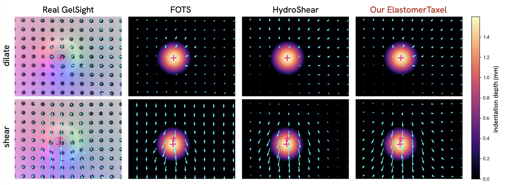
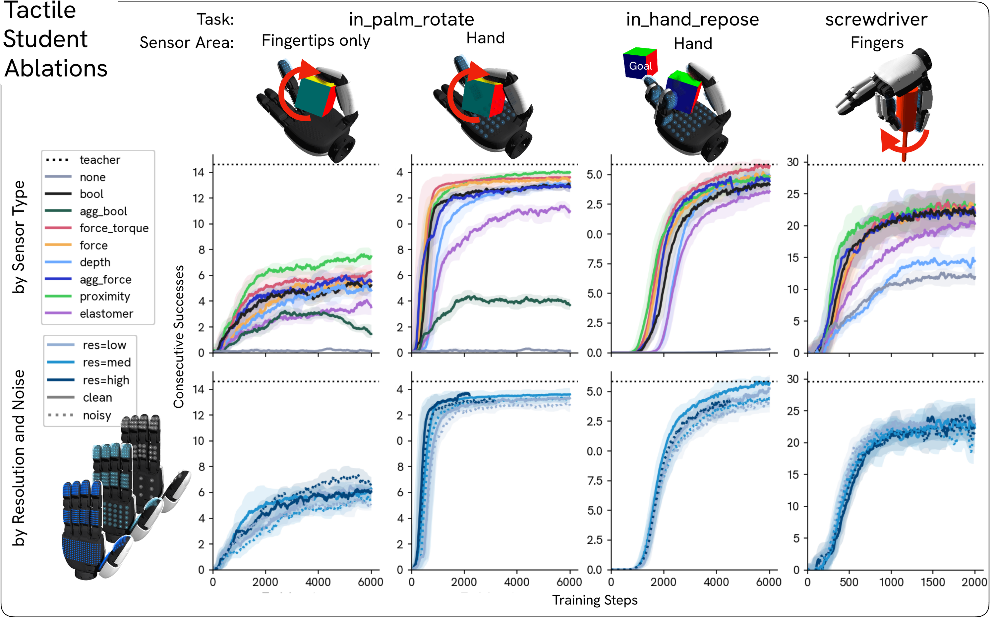
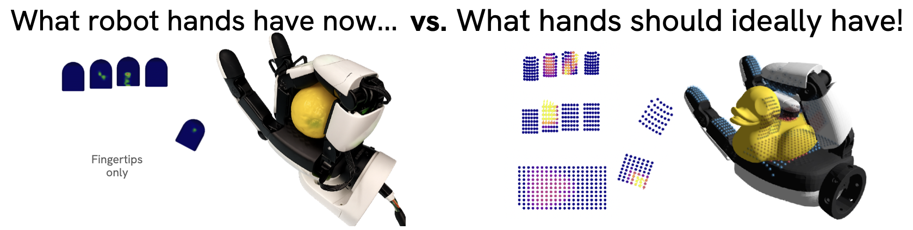
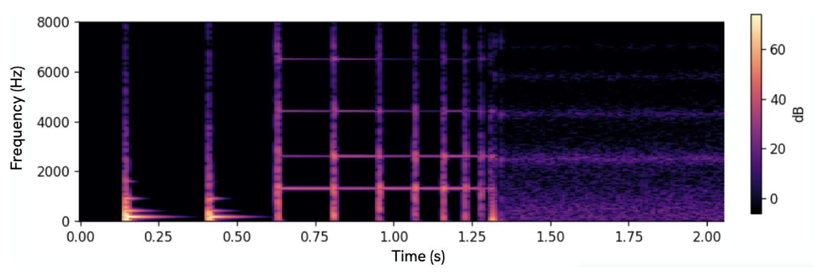

Platform Overview

Exploring Tactile Sensors at Scale for Learning Dexterous Tasks
We integrate tactile sensors in Genesis physics simulation, exposing a representative set of tactile sensing abstractions — binary contact, contact depth, per-taxel force/torque, elastomer marker displacement, geometry-aware proximity, and a voxelized temperature field — under a common, configurable interface that runs across thousands of parallel environments on a single GPU.

ElastomerTaxel. The right-side table reports relative
marker-displacement error after optimizing each simulator's parameters to match the real image.

in_palm_rotate, in_hand_repose,
and screwdriver on the XHand1, we compare tactile data types against the privileged teacher and
distilled tactile student, varying placement (tips / fingers / whole hand), resolution, and noise.
The proprioception-only baseline trails every tactile student on all three tasks. Touch is required to recover task-relevant object state.
Fingertip-only sensing (what most commercial hardware supports) trails whole-hand coverage by a wide margin. Sensorizing palm and proximal phalanges matters more than upgrading the fingertip sensor.
Aggregated across tasks, per-taxel force/torque matches or outperforms every other tactile representation.
Resolution matters far less than coverage. Roughly 200 taxels spread across the whole hand suffice across all tasks studied.


@inproceedings{chung2026tactilegenesis,
title = {Tactile Genesis: Exploring Tactile Sensors at Scale
for Learning Dexterous Tasks},
author = {Chung, Trinity and Yamazaki, Kashu and Patel, Dhruv and
Duburcq, Alexis and Qiao, Yiling and
Fragkiadaki, Katerina and Nayebi, Aran},
booktitle = {Conference on Robot Learning (CoRL)},
year = {2026}
}